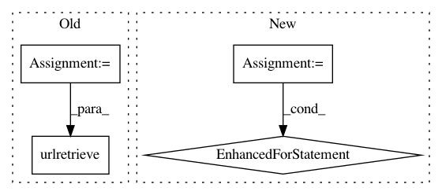

2d0b9edf7119ca178bb142e1bdfc3e5fc107fb85,pyglmnet/datasets.py,,fetch_tikhonov_data,#Any#,14
Before Change
urllib.urlretrieve(url, fname)
fixations_df = pd.read_csv(fname)
url = os.path.join(base_url, "tikhonov/probes.csv")
fname = os.path.join(dpath, "probes.csv")
urllib.urlretrieve(url, fname)
probes_df = pd.read_csv(fname)
url = os.path.join(base_url, "tikhonov/spiketimes.csv")
fname = os.path.join(dpath, "spiketimes.csv")
After Change
os.mkdir(dpath)
base_url = "https://raw.githubusercontent.com/glm-tools/datasets/master"
fnames = ["fixations.csv", "probes.csv", "spiketimes.csv"]
for fname in fnames:
url = os.path.join(base_url, "tikhonov/%s" % fname)
fname = os.path.join(dpath, fname)
urllib.urlretrieve(url, fname)
return dpath
def fetch_community_crime_data(dpath="/tmp/glm-tools"):
In pattern: SUPERPATTERN
Frequency: 3
Non-data size: 4
Instances
Project Name: glm-tools/pyglmnet
Commit Name: 2d0b9edf7119ca178bb142e1bdfc3e5fc107fb85
Time: 2017-03-29
Author: mainakjas@gmail.com
File Name: pyglmnet/datasets.py
Class Name:
Method Name: fetch_tikhonov_data
Project Name: ilastik/ilastik
Commit Name: b261f6e44d93d4a9d767d81add53f0f9071a42bb
Time: 2014-07-22
Author: bergs@janelia.hhmi.org
File Name: lazyflow/utility/io/tiledVolume.py
Class Name: TiledVolume
Method Name: _retrieve_tile
Project Name: PetrochukM/PyTorch-NLP
Commit Name: def0dfbfbc6f840484a10cc4e963cfa8686ded69
Time: 2018-04-01
Author: petrochukm@gmail.com
File Name: torchnlp/utils.py
Class Name:
Method Name: download_urls